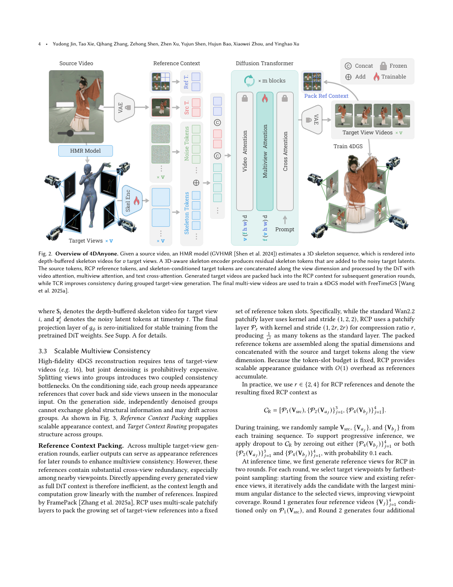

#1
★ 8/10
4DAnyone: Create Anyone in 4D from a Casual Monocular Video
4DAnyone：从普通单目视频创建任意人物的四维模型

图 Figure · Page 4 of paper
🎯 用一段普通手机视频，重建出高质量可动四维人体模型
Reconstruct a fully animated 4D human from a single casual phone video using consistent multi-view video generation.
🗣️ 一句话比喻 · Plain-English Analogy就像你只用一张自拍照，照相馆却能神奇地还原出你360度旋转、还能做各种动作的全息立体影像——4DAnyone做的就是这件事，只不过输入的是一段普通视频，输出的是一个完整的四维动态人体模型。Imagine you film yourself walking around with your phone, and an AI uses that single video to build a full 3D action figure of you — one that can be viewed from any angle and even replays your movements in 3D. That's exactly what 4DAnyone does, turning an ordinary video into a fully animated digital twin.
| 维度 | 中文 | English |
|---|---|---|
| ❓ 待解决 的问题 |
现有AI可以从视频里重建三维人物，但通常需要多个摄像机同时拍摄，普通手机拍的单一视角视频效果很差。虽然已有一些模型能根据一段视频"脑补"出其他角度的画面，但当需要生成几十个不同视角时，这些画面之间会变得前后不一致——就像拼图碎片对不上，最终重建出来的人物扭曲变形。 | Existing AI can reconstruct 3D humans, but usually needs many cameras filming at once. When you only have a single phone video, current models try to "imagine" what the person looks like from other angles — but when they need to generate dozens of views, the images become inconsistent with each other, like puzzle pieces that don't fit, resulting in distorted or drifting reconstructions. |
| 💡 解决 的亮点 |
• 发现并命名了"有界注意力上下文"瓶颈问题：当目标视角超过模型单次处理能力时，跨视角一致性会系统性崩溃。 • 提出参考上下文压缩（RCP）：将不断增长的参考视角信息压缩成固定长度，让模型始终"记住"所有已有视角的外观，复杂度从O(N)降为O(1)。 • 提出目标上下文路由（TCR）：在去噪过程中轮换视角分组，让各组视角能间接"交流"，从而保持全局结构一致性。 • 构建了MVGameHuman数据集，结合游戏引擎、光场摄影棚和野外视频多源数据进行训练，泛化能力强。 | • Identifies the "bounded-attention-context" bottleneck — a fundamental reason why generating many consistent views at once breaks down. • Reference Context Packing (RCP) compresses all previously generated views into a fixed-size memory, so the model doesn't "forget" earlier views as more are added. • Target Context Routing (TCR) cleverly rotates which groups of views talk to each other during generation, ensuring global structure stays coherent. • A new multi-source dataset (MVGameHuman) is built using a game engine for scalable 4D human training data. |
| 🧪 实验 内容 |
实验在DNA-Rendering和DyMVHumans两个标准多视角人体视频数据集上进行，对比了多个先进的视角合成和四维重建基线方法。评估指标包括新视角合成质量（PSNR、SSIM、LPIPS）以及四维重建下游任务的渲染质量。训练数据融合了自建的MVGameHuman游戏引擎数据、光场摄影棚数据和野外视频数据。 | Experiments were run on two standard multi-view human video benchmarks: DNA-Rendering and DyMVHumans. The team compared against several state-of-the-art view synthesis and 4D reconstruction methods. They measured image quality of synthesized novel views (using PSNR, SSIM, and LPIPS scores) and also evaluated the quality of the final downstream 4D Gaussian Splatting reconstruction. Training used data from three sources: their own game-engine dataset, a professional light-stage capture studio, and in-the-wild internet videos. |
| 📊 实验 结果 |
在DNA-Rendering基准上，4DAnyone在新视角合成质量上超过所有对比方法，PSNR、SSIM、LPIPS三项指标均达到最优。在DyMVHumans基准上同样表现最佳。在下游四维高斯泼溅重建任务中，4DAnyone生成的多视角视频质量更高，重建出的人体更清晰、结构更完整，且在野外视频上展示了强劲的泛化能力（具体数值详见原文表格及项目页面）。 | On the DNA-Rendering benchmark, 4DAnyone achieves state-of-the-art performance across all three standard image quality metrics (PSNR, SSIM, LPIPS), outperforming all prior methods in novel-view video synthesis. It similarly leads on the DyMVHumans benchmark. For the downstream 4DGS reconstruction task, the reconstructed human avatars are sharper and more structurally accurate than those from competing methods, with strong generalization to casual in-the-wild videos (detailed per-metric numbers are available in the paper's tables and project page). |
| 🏁 结论 | 4DAnyone证明了：通过解决多视角生成中的注意力上下文瓶颈，普通单目视频可以被高质量地重建为四维动态人体模型，且效果超越此前所有方法。这项工作为低成本、高质量的人体数字化提供了切实可行的技术路径。 | 4DAnyone demonstrates that by tackling the fundamental attention-context bottleneck in multi-view generation, a single casual video is sufficient to reconstruct a high-quality, animatable 4D human — outperforming all prior methods on standard benchmarks and generalizing robustly to everyday in-the-wild footage. |
| 🔗 论文 链接 |
arXiv: 2608.20335v1 · 📥 PDF | |
⚙️ Method · 方法详解
4DAnyone的核心思路是：先用一个视频扩散模型从单目视频"幻想"出几十个不同角度的一致性视频，再把这些视频"提升"为四维高斯泼溅（4DGS）模型。为解决多视角不一致问题，它用两个互补设计：①参考上下文压缩（RCP）把所有已生成的参考视角信息压缩成固定长度的"记忆块"，无论视角有多少，模型的负担都不增加；②目标上下文路由（TCR）在去噪的早期阶段让不同视角分组轮换"交流"，同步大结构，后期则稳定局部细节。两者配合，让几十个视角的视频保持高度一致，最终重建出高质量的四维动态人体。
4DAnyone works in two big steps: first, a video diffusion model "imagines" dozens of consistent views of the person from different angles; then those views are used to build a 4D Gaussian Splatting model (think of it as a dynamic 3D point cloud that can be rendered from any angle at any moment in time). To keep all those views consistent, two tricks are used: Reference Context Packing squeezes all previously generated views into a fixed-size "memory" so the model never gets overwhelmed. Target Context Routing makes different groups of views "chat" with each other during the generation process, like passing notes in a classroom so everyone stays on the same page about the big picture structure.
📐 Key Formulas · 关键公式
\[\text{Reference-context complexity: } O(N) \rightarrow O(1) \text{ (via RCP)}\]
💡 参考上下文压缩（RCP）将随视角数N线性增长的计算复杂度压缩为常数级，无论生成多少视角，模型的额外负担都不增加。
Reference Context Packing reduces the cost of conditioning on previously generated views from growing linearly with the number of views N down to a constant — the model's memory burden stays fixed no matter how many views are added.
\[\text{TCR: rotate target-view groupings across denoising timesteps } t\]
💡 目标上下文路由在去噪时间步t中轮换视角分组方式，使不同组的视角在高噪声阶段互相交流大结构信息，在低噪声阶段稳定细节。
Target Context Routing changes which views are grouped together at each denoising step t, allowing all views to indirectly share structural information early in generation and then lock in fine details later.
🌟 Why It Matters · 为什么重要
这项技术让任何人只需用手机拍一段视频，就能生成自己的高保真四维数字分身，对影视制作、虚拟现实、游戏角色创建、以及远程社交都有巨大实用价值。它大幅降低了专业级人体数字化的成本和门槛，让这一技术从专业摄影棚走向普通大众。
This technology could let anyone create a high-quality animated 3D version of themselves using just a phone video — opening doors for accessible VR avatars, film visual effects, game character creation, and lifelike video calls. It dramatically lowers the cost and complexity of professional-grade human digitization, moving it from expensive studio setups to everyday devices.